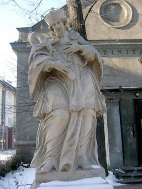
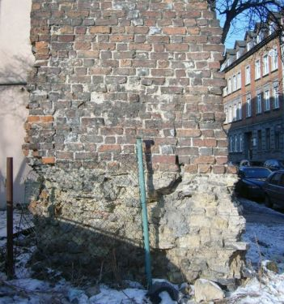

Figura Matki Boskiej w elewacji ratusza po renowacjiFigura Matki Boskiej w elewacji ratusza przed renowacjąFragment szaty Matki Boskiej przed renowacją

Figura św. Jana Nepomucena przed kościołem p.w. Świętej TrójcyPiaskowce magurskie w osi antyklinyFontanna z Neptunem po renowacjiFontanna z Neptunem przed renowacjąKościół p.w. św. Bartłomieja - widok od zachoduSpichlerz w Starych Gliwicach - widok od NEZamek PiastowskiPozostałości murów miejskich - ul. Dolnych Wałów

Pozostałości murów miejskich - ul. GrodowaZamek PiastowskiZamek PiastowskiZamek Piastowski - głaz narzutowyFontanna z NeptunemFontanna z NeptunemKościół p.w. św. Bartłomieja - widok od półonocyKościół p.w. św. Bartłomieja - widok od południaKościół p.w. św. Bartłomieja - widok muruKościół w Łabędach - widok od południaKościół w Łabędach - widok od NWKościół p.w. Wniebowzięcia Matki Boskiej w ŁabędachKościół p.w. Wniebowzięcia Matki Boskiej w ŁabędachKościół p.w. Wniebowzięcia Matki Boskiej w ŁabędachPozostałości murów miejskich - pl. RzeźniczySpichlerz w Starych Gliwicach - widok od wschodu